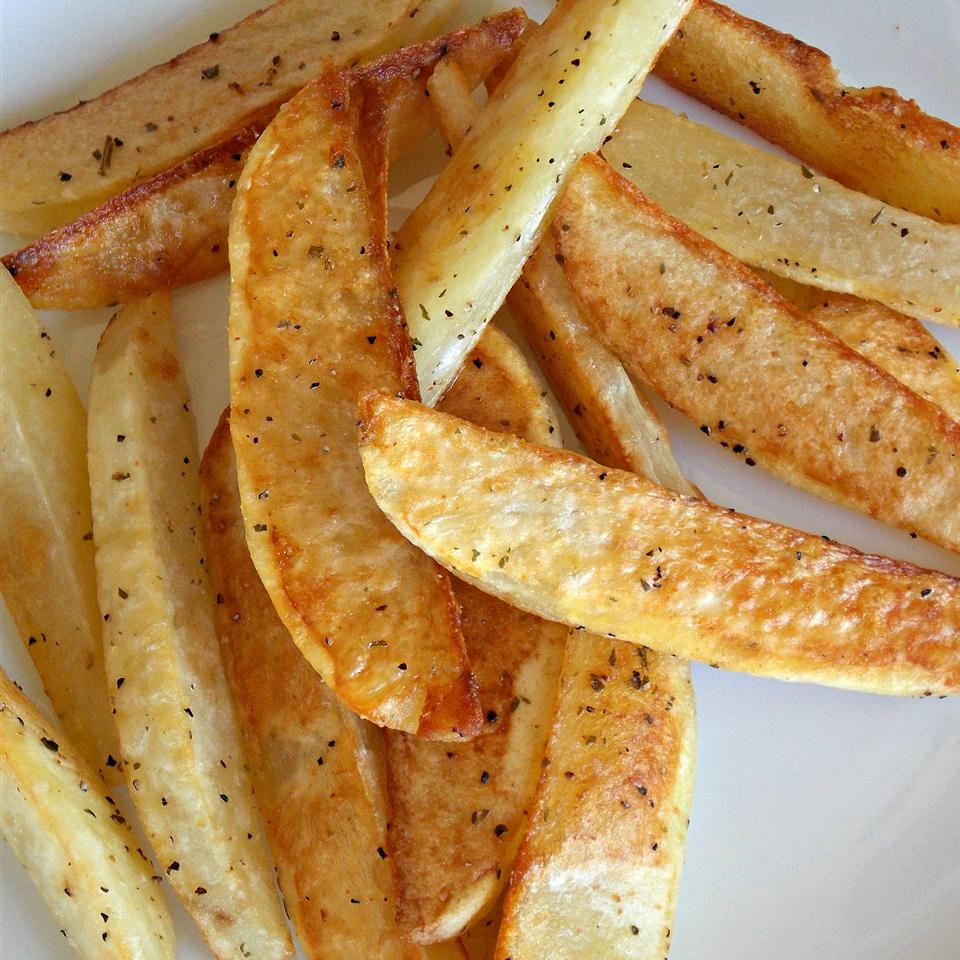

Lasagna

Description
This is a great recipe to get kids started learning how to cook. Take a day, take a week, teach them new things each day. We used this for our 'at-home' camp week. Taught the kids how to cook one new thing each day for an entire week.
Ingredients
- 2 pounds baking potatoes, each cut into six wedges
- 2 tablespoons olive oil
- ½ teaspoon dried thyme leaves
- ¼ teaspoon ground black pepper
- salt to taste
- ¼ cup shredded Cheddar cheese (Optional)
Steps:
- Preheat oven to 450 degrees F (230 degrees C).
- Arrange potato wedges on a baking sheet. Drizzle olive oil over the wedges; season with thyme, pepper, and salt. Turn wedges with a spatula to coat with oil and seasonings..
- Roast potato wedges for 15 minutes, turn, and continue roasting until soft in the center, about 15 minutes more. Transfer wedges to a platter and sprinkle cheese over them.